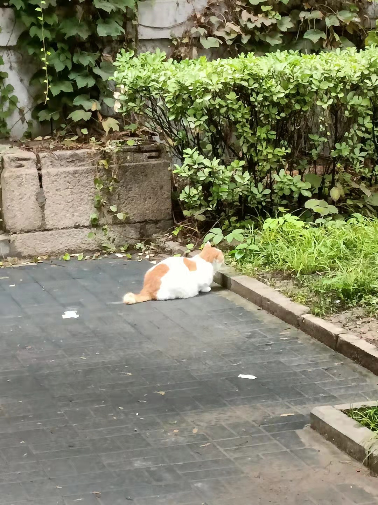

作为一个平平凡凡的大学生，没有什么特别热爱的东西，心中也没有什么特别伟大的理想，不过平时喜欢看看小说动漫，还会玩一下游戏；会运动，但不经常，常玩的有乒乓球和羽毛球等。
来到北京后，我去了一些博物馆，还在北大里面逛了一下，这里有一些图片。这里的食物的风格也和我们那儿不一样，很多菜品都偏甜或者较为清淡，刚开始的时候的确有些不习惯，后来渐渐地就有些习惯了，不过还是很怀念家里的味道。北京这儿的气候也不同，前两天和我妈打电话，听她说我们那儿这两天还热的很呢，而北京，竟然听说有地方已经开始下雪了...

再说几句，北大里面的猫也很多，而且还不怕人，但我怕他们，我怕被挠，所以只是远远的照了几张照片，没拍好看；有天我看见一只猫，蹲在井盖上，晒着太阳，看着路上人来人往，就像一个退休大爷，看着其他人为生活而奔波，但自己内心却古井无波，实在是太惬意了。
|
 |